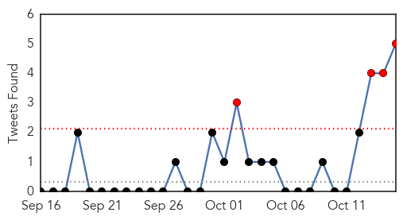
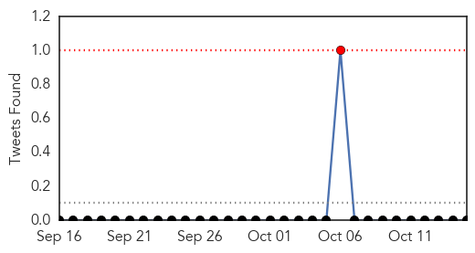

Cholera
30-Day Web Trend
0 alerts, 3 warnings

30-Day Twitter Trend
4 alerts, 0 warnings

Article Locations
Article Confidences
Top Articles:
- 0.995
- Cholera infects almost 200
- 0.990
- Haitian cholera victims call for UN accountability
- 0.990
- Haitian cholera victims call for UN accountability - Haiti
- 0.863
- We are Not Hacked: Centenary Bank Opens Up On ATM Breach
- 0.863
- UNRA PROBE: PEC Consultants Approved Baseless Payments to Dott Services
- 0.863
- Ministry of Energy Commences Sector Review
- 0.863
- Kenyatta Rallies EALA to Expedite Regional Integration Process
- 0.826
- The simplest way to save lives – in pictures
Top Tweets:
- 0.731
- RT: Curious what's your tipping point? 9600+ dead 776000+ sick. Haiti cholera count FaceJustice
- 0.690
- Highly Recommended: Haiti’s Earthquake Was Devastating. The Cholera Epidemic Was Worse. By https://t.co/0OlWdIisWb
- 0.652
- RT: I remember when cholera first ripped thru Haiti 5 yrs ago; 8800 deaths + nearly 1 mill infected still no justice. https://t.…
- 0.571
- RT: 5 yrs 9000 dead no compensation no one disciplined or admitted responsibility FaceJustice Haiti cholera http://t…
- 0.556
- RT: "Earthquakes are unavoidable. Human rights tragedies are not." On the cholera epidemic in Haiti: http://t.co/humINvOiyo
MERS
30-Day Web Trend
30-Day Twitter Trend
1 alerts, 0 warnings

Article Locations
Article Confidences

Top Articles:
Top Tweets:
-
No tweets found for Oct 15, 2015